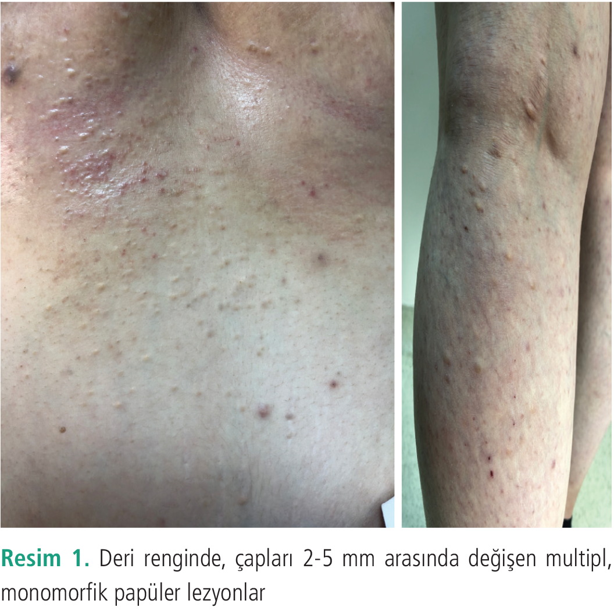
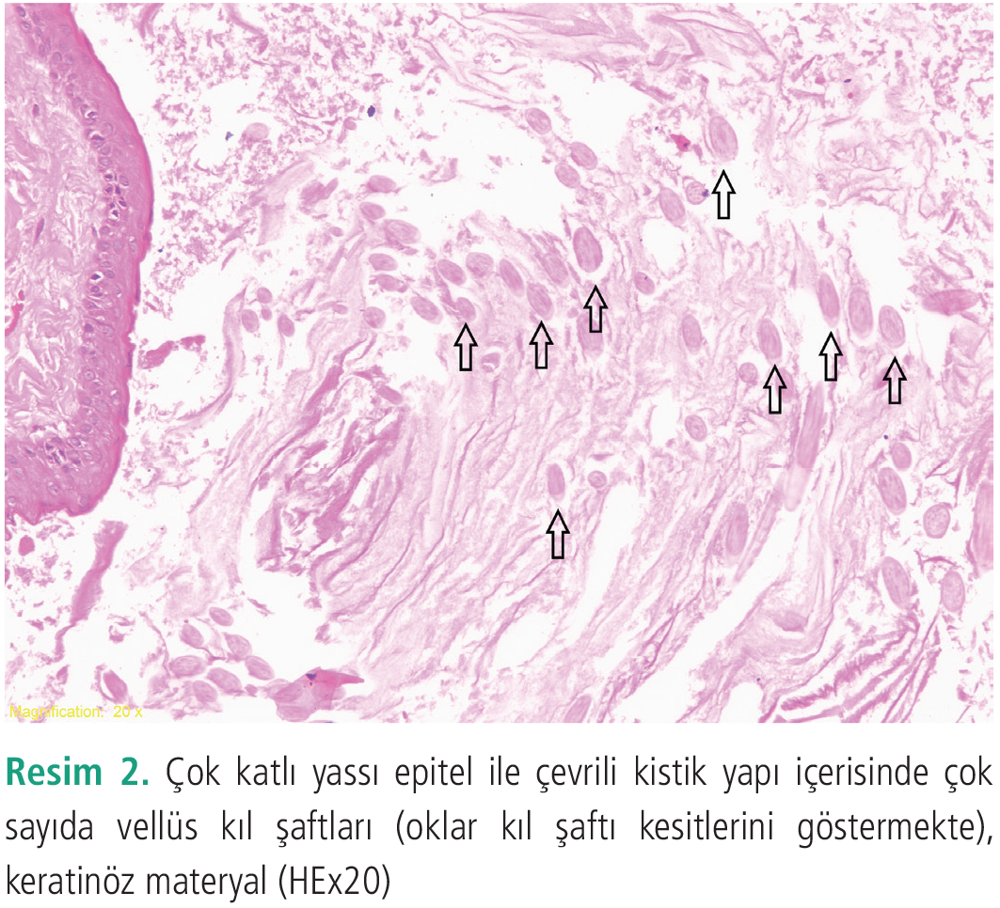

Olgu Sunumu
Erüptif Vellüs Kıl Kisti: Nadir Bir Olgu
1 Marmara Üniversitesi Tıp Fakültesi, Deri ve Zührevi Hastalıkları Anabilim Dalı, İstanbul, Türkiye
2 Marmara Üniversitesi Tıp Fakültesi, Patoloji Anabilim Dalı, İstanbul, Türkiye
Anahtar Kelimeler: Dermatolojikıl folikülüvellüs kıl kisti
Keywords: Dermatologyhair folliclevellus hair csyt
Geliş: 04.06.2019Kabul: 14.08.2019Yayın: 24.09.2020
s. 96-98
Özet
ÖZET
Erüptif vellüs kıl kisti genellikle gövdede ve ekstremitelerde yerleşen, asemptomatik, çapları 1-7 mm arasında değişen, deri renginde papüllerle karakterizedir. Vellus kıl folikülünün hatalı gelişiminden kaynaklandığı düşünülen, nadir görülen bir epidermal kist formudur. Burada özgün klinik ve histopatolojik bulgular ışığında tanı konulan 24 yaşında kadın erüptif vellüs kıl kisti olgusu sunulmaktadır.
Tam Metin
Giriş
Erüptif vellüs kıl kisti (EVKK) ilk kez 1977 yılında Esterly ve ark. (1) tarafından iki pediatrik olguda tanımlanmıştır. EVKK sıklıkla göğüs, karın ve ekstremitelerde yerleşen, genellikle asemptomatik, çapları 1-7 mm arasında değişen, kubbe şekilli, deri renginde, yumuşak kıvamlı papüllerle karakterize nadir görülen bir epidermal kist formudur (2). Benign bir hastalık olmakla birlikte kozmetik nedenlerle tedavi gerekebilmektedir. Burada, özgün klinik ve histopatolojik özelliklere sahip olan kazanılmış edinsel EVKK olgusu sunulmaktadır.
Olgu
Yirmi dört yaşındaki kadın hasta göğüs ve karın bölgesinde 2 yıl önce gebelik döneminde ortaya çıkan, zamanla sayıca artış gösteren küçük kabarıklıklar yakınması ile polikliniğimize başvurdu. Dermatolojik muayenesinde boyunda, gövdede, sırtta, ekstremite proksimallerinde ve fleksural bölgelerde deri renginde, çapları 2-5 mm arasında değişen, multipl monomorfik papüler lezyonlar saptandı (Resim 1). Papüllerin birinden alınan punch biyopsinin histopatolojik incelemesinde; çok katlı yassı epitel ile çevrili kistik yapı içerisinde çok sayıda vellüs kıl şaftları, keratinöz materyal ve destrükte kist duvarı gözlendi (Resim 2). Hastaya klinik ve histopatolojik bulgular ışığında EVKK tanısı konuldu. Hastanın lezyonları asemptomatik olmasına rağmen, kozmetik açıdan tedavi isteği olması nedeniyle çapları daha büyük olan lezyonlara ince koter ucu ile insizyon ve cerrahi drenaj uygulandı. Takiben hastaya sistemik isotretinoin tedavisi başlandı. Hastadan yazılı ve sözlü onam alındı.
Tartışma
EVKK’nin otozomal dominant kalıtımına dair kanıtlar olsa da genetik yatkınlık olmayan sporadik olgular da bildirilmiştir (3). Sporadik olgular ailevi formlara göre daha geç yaşlarda gözlenmekte, lezyon bölgelerinde travma ve iritasyon öyküsü bulunmamaktadır (4). Cinsiyet ve ırka göre prevalansı benzerdir. EVKK’nin etiyolojisi tam olarak bilinmemekle birlikte, vellüs kıl folikülünün gelişimsel anomalisi sonucunda oluşan foliküler oklüzyon ve kistik dilatasyon yoluyla veya foliküler hamartamatöz bir oluşum ile ortaya çıkabileceği ileri sürülmektedir (5). Göğüs, karın ve ekstremiteler EVKK’nin en sık görüldüğü bölgeler olmakla birlikte yüz, glutea, inguinal bölge ve labium majör gibi atipik yerleşimli lezyonları olan olgular da literatürde bildirilmiştir (5-8).
EVKK genellikle izole görülmekle birlikte konjenital pakonişya, ektodermal displazi ve kronik böbrek yetmezliği gibi diğer tıbbi durumlar ve sendromlarla da ilişkilendirilmiştir (9-11). Bizim olgumuzun detaylı muayenesinde EVKK’ye eşlik edebilecek patolojik bulgu saptanmamıştır. Bu olguda görüldüğü gibi lezyonların gebelik döneminde ortaya çıkışının rastlantısal bir durum mu yoksa tetikleyici bir faktör mü olduğu tartışmalıdır. Melanositik ve non-melanositik bazı deri tümörlerinin gebelik ile tetiklenebileceği veya değişikliğe uğrayabileceği bilinmekle birlikte güncel literatürde EVKK’nin gebelik ile ilişkisi konusunda yeterli veri bulunmamaktadır (12).
Olgularının %25’inde muhtemelen transepidermal eliminasyon yolu ile spontan gerileme görülmektedir (13).
Lezyonlar benign karakterde olup tedavisi kozmetik kaygı nedeniyle yapılmakta ancak standart bir tedavi yaklaşımı bulunmamaktadır. Literatürde topikal retinoik asit, laktik asit, %10 üre, kalsipotriol, sistemik isotretinoin, elektrokoter, karbondioksit ve erbiyum YAG lazer tedavileri uygulanan ve olumlu yanıt alınan olgu bildirimleri yer almaktadır (14,15). Klinik ve histopatolojik ayırıcı tanısına adneksiyel tümörler, pilar keratoz, dermoid kist, perforan dermatozlar, folikülit, akneiform erupsiyon, molluskum kontagiosum, siringom, milia ve steatokistoma multipleks girmektedir. Bu nedenle EVKK’nin bu tip lezyonların ayırıcı tanısında akılda tutulması önem arz etmektedir. Olgumuzda gebelik tesadüfen eş zamanlı olabileceği gibi patogenezdeki muhtemel tetikleyici rolü de göz önünde bulundurulmalıdır.


Kaynaklar
1.Esterly NB, Fretzin DF, Pinkus H. Eruptive vellus hair cysts. Arch Dermatol 1977; 113: 500-503.
2.Zaharia D, Kanitakis J. Eruptive vellus hair cysts: report of a new case with immunohistochemical study and literature review. Dermatology 2012; 224: 15-19.
3.Stiefler RE, Bergfeld WF. Eruptive vellus hair cysts --an inherited disorder. J Am Acad Dermatol 1980; 3: 425.
4.Hayashibe K, Hori K, Nakanishi T, Mishima Y, Jimbo T, Ichihashi M. Eruptive vellus hair cysts: first case of onset in middle age. Arch Dermatol 1986; 122: 141.
5.Kumakiri M, Takashima I, Iju M, Nogawa M, Miura Y. Eruptive vellus hair cysts - a facial variant. J Am Acad Dermatol 1982; 7: 461-467.
6.Torchia D, Vega J, Schachner L. Eruptivevel- lus hair cysts: a systematic review. Am J Clin Dermatol 2012; 13: 19-28.
7.Nogita T, Chi H, Nakagawa H, Ishibashi Y. Eruptive vellus hair cysts with sebaceous glands. Br J Dermatol 1991; 125: 475-476.
8.Park J, Her Y, Chun B, Kim C, Kim S. A case of eruptive vellus hair cysts that developed on the labium major. Ann Dermatol 2009; 21: 294-296.
9.Takeshita T, Takeshita H, Irie K. Eruptive vellus hair cyst and epidermoid cyst in a patient with pachyonychia congenita. J Dermatol 2000; 27: 655-657.
10.Kose O, Tastan HB, Deveci S, Gur AR. Anhidrotic ectodermal dysplasia with eruptive vellus hair cysts. Int J Dermatol 2001; 40: 401-402.
11.Mieno H, Fujimoto N, Tajima S. Eruptive vellus hair cyst in patients with chronic renal failure. Dermatology 2004; 208: 67-69.
12.Walker JL, Wang AR, Kroumpouzos G, Weinstock MA. Cutaneous tumors in pregnancy. Clin Dermatol 2016; 34: 359-367.
13.Takeda H, Miura A, Katagata Y, Mitsuhashi Y, Kondo S. Hybrid cyst: case reports and review of 15 cases in Japan. J Eur Acad Dermatol Venereol 2003; 17: 83-86.
14.Helbig D, Bodendorf M, Grunewald S, et al. Comparative treatment of multiple vellus hair cysts with the 2940 nm Er:YAG and 1540 nm Er:Glass laser. J Cosmet Laser Ther 2011; 13: 223-226.
15.Urbina-González F, Aguilar-Martínez A, Cristóbal-Gil MC, Sánchez de Paz F. The treatment of eruptive vellus hair cysts with isotretinoin. Br J Dermatol 1987; 116: 465-466.